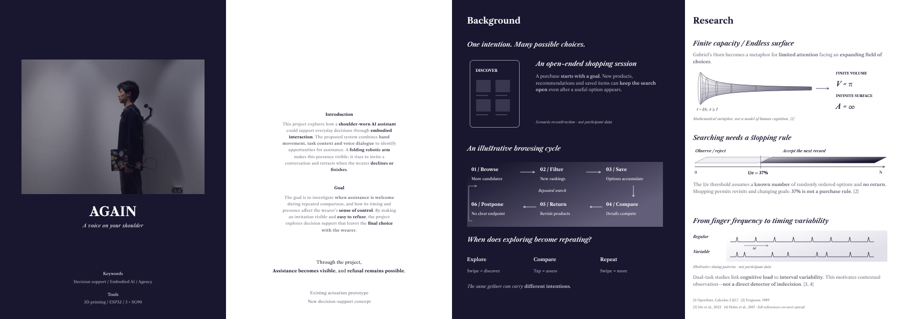
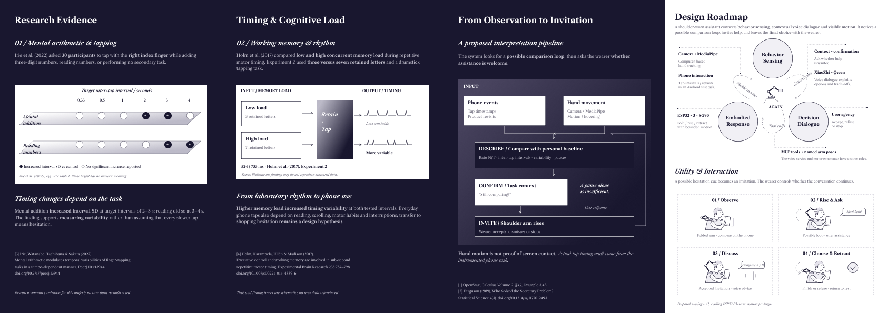
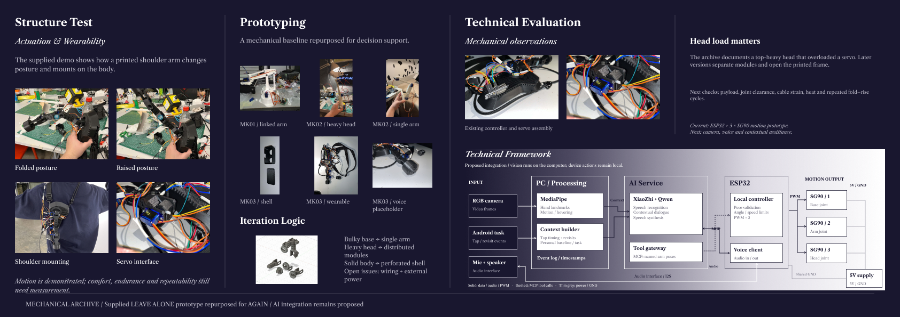
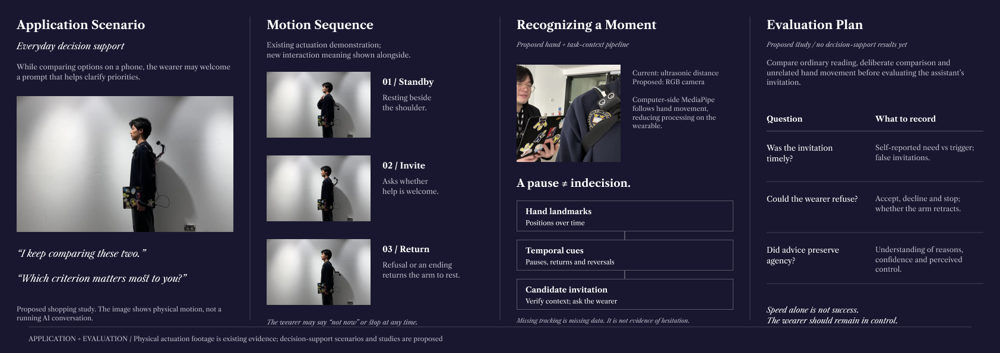

Wearable robotics / Interaction design
AGAIN
A voice on your shoulder.
When comparing becomes a loop, when is help welcome? AGAIN explores a shoulder-worn assistant that makes its attention visible, invites a conversation, and leaves the final decision with the wearer.
01 / Context & research
Portfolio spread · 1684 × 595
Limited attention meets an expanding field of choices. Mathematical metaphors and timing research frame the design question.
View full size ↗02 / Evidence & design roadmap
Portfolio spread · 1684 × 595
Observe contextual cues, ask whether help is wanted, offer advice, and return to rest. A pause alone does not establish hesitation.
View full size ↗03 / Structure & technical framework
Portfolio spread · 1684 × 595
A printed shoulder mechanism driven by three SG90 servos. The proposed sensing and voice architecture builds on this physical prototype.
View full size ↗04 / Scenario & evaluation
Portfolio spread · 1684 × 595
From a folded resting posture to an invitation for conversation. Evaluation focuses on useful timing, wearer control, and physical comfort.
View full size ↗Making attention visible.
The existing mechanical demo uses an ESP32, three SG90 servos, and 3D-printed parts to fold, rise, and retract. Its structure was adapted from an earlier project and developed through model iterations.
The current ultrasonic sensor and buzzer are prototype components. They do not provide the proposed camera and microphone functions.
From motion to dialogue.
A camera would send video to a computer running MediaPipe. An instrumented Android shopping task would supply actual touch timestamps. A XiaoZhi-based voice service with Qwen would support dialogue, with MCP tool calls requesting bounded motion from the ESP32.
Vision, AI integration, and user evaluation remain planned work. Hand motion is a contextual cue; it neither proves screen contact nor directly measures indecision.
Research references & interpretation
- OpenStax, Calculus Volume 2, §3.7. Gabriel’s Horn is used as a mathematical metaphor for finite capacity and an endless surface, not as a model of human cognition.
- Ferguson (1989), Who Solved the Secretary Problem? The 1/e stopping threshold assumes a known number of randomly ordered options and irreversible choices. It is not a shopping rule.
- Irie et al. (2022), Mental arithmetic modulates temporal variabilities of finger-tapping tasks in a tempo-dependent manner. Supports task-dependent differences in timing variability, not a direct detector of hesitation.
- Holm et al. (2017), Executive control and working memory are involved in sub-second repetitive motor timing. Laboratory memory-load findings motivate a design hypothesis that still needs validation in phone use.
Research diagrams are qualitative summaries or illustrative schematics. They are not participant data collected for this project.